Frame 0 · 0.000s · pose graphics4.4/5
Initial two connected mitten grips and one gold oval are visible; this opening alone cannot demonstrate the instructed twist.
Complete motion/current game/owner score unassigned for this individual canvas.
All41 complete decoded896×512 canvases and10 component opinions were directly reviewed. The fans detach from the central wrapper and merge into the cuffs; no clear opposing twists or stable release. A4 static source4.5/current in-game WRAP2.8 remain separate. LOCAL_MOTION_REFERENCE_ONLY;no production or cinematic binding.
Corrected source grip and rejected variants · All individual frame/component scores · Exact source/input/prompt/seven workflow bindings
| Component | Draft score | Evaluation |
|---|---|---|
| exactly two hand count | 4.5/5 | Two principal hand groups remain visible throughout, with no extra operator. This bounded count success does not approve their shape/contact/material topology. |
| sleeve cuff mitten topology | 2.8/5 | Late gold fans merge with teal cuffs and the coral mitten lobes stretch into finger-like forms; original simple sleeve-owned mitten design fails. |
| both neck grips through action | 3.3/5 | Early source grips are useful, but later paper-strip ends and outside fans split around the hands instead of remaining one gripped sheet. |
| opposing wrist rotation | 1.9/5 | Small forward/down motion and posture changes occur; the hands do not clearly turn opposite ways while retaining their own short-neck contacts. |
| specific gold paper response | 1.5/5 | Neck folds stay long/open and the loose fans rise toward the arms, rather than turning with short rolled necks closed by the mittens. |
| single wrapper fan conservation | 0.9/5 | By frames25-40 the fans detach from the central strip groups and become large gold cuff appendages. One continuous paper sheet is not conserved. |
| covered oval and table support | 4.0/5 | The central gold body remains covered and low on the table, but size/working footprint changes and its detached neck/fan topology undermine identity conservation. |
| two hand release and settle | 1.0/5 | Neither hand cleanly releases beside two stable finished twists. The endpoint holds corrupted cuff/fan forms above bare paper-strip ends. |
| character scene registration | 3.7/5 | Figure and working-object scale contract against the retained room early, and late costume/hand silhouette drifts. Stable source placement is not maintained. |
| whole neck twist release component | 1.8/5 | Rejected: useful entry grips cannot outweigh missing opposing twists, detached paper fans, corrupted cuffs and absent stable release. No current game or complete wrapping acceptance. |
Initial two connected mitten grips and one gold oval are visible; this opening alone cannot demonstrate the instructed twist.
Complete motion/current game/owner score unassigned for this individual canvas.
Both short gold necks remain between the mitten lobes; no visible opposing wrist rotation yet.
Complete motion/current game/owner score unassigned for this individual canvas.
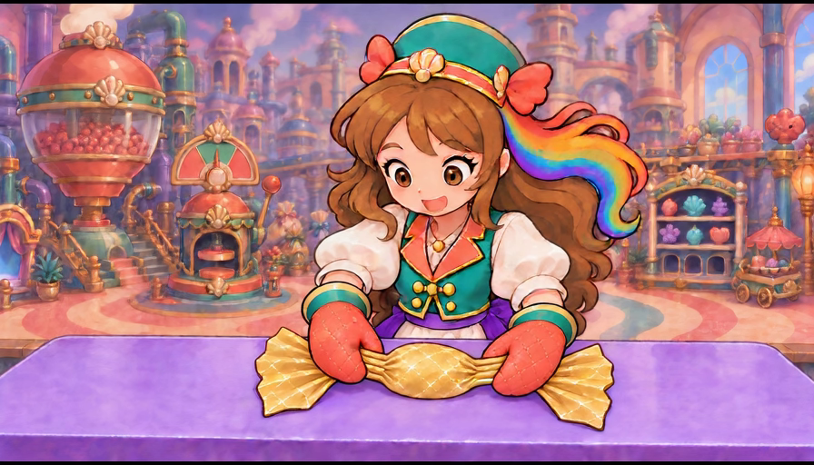
Figure and working object contract relative to the retained room; the two grips stay broadly similar.
Complete motion/current game/owner score unassigned for this individual canvas.
The initial pose is reduced against the fixed tabletop; gold fans remain loose and no neck closure is shown.
Complete motion/current game/owner score unassigned for this individual canvas.
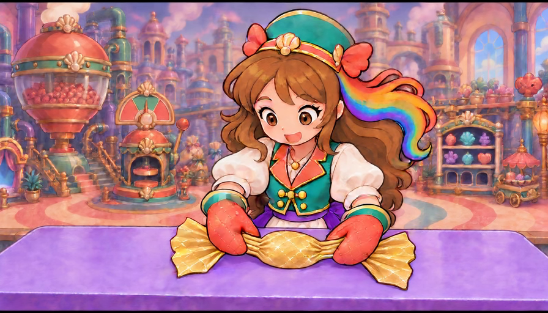
Both hands stay near their original short necks; the action still reads as holding rather than opposite twisting.
Complete motion/current game/owner score unassigned for this individual canvas.
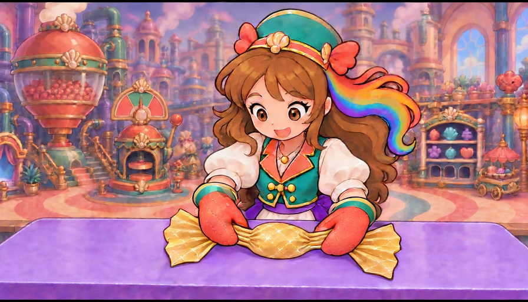
Small forearm movement changes posture, with the two long gold folds still open between body and fans.
Complete motion/current game/owner score unassigned for this individual canvas.
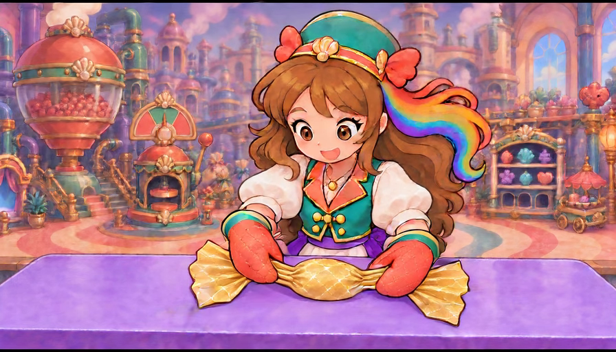
Same gold oval remains table-supported, but wrists have not visibly rolled opposite directions.
Complete motion/current game/owner score unassigned for this individual canvas.
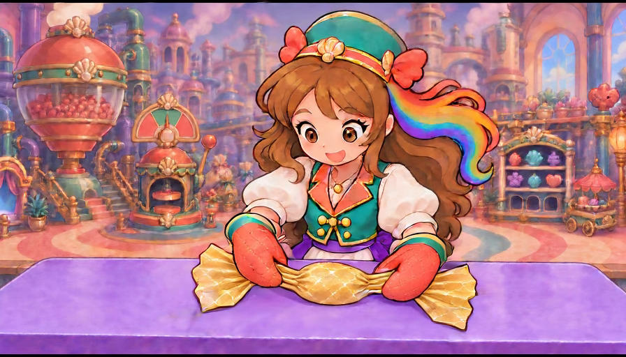
The figure remains smaller than entry; both fans stay open and their folds are not being wound closed.
Complete motion/current game/owner score unassigned for this individual canvas.
Hands gently reposition without a readable two-sided opposing rotation; oval remains opaque.
Complete motion/current game/owner score unassigned for this individual canvas.
Both gold fans are still connected and spread; the requested twist has not become visible.
Complete motion/current game/owner score unassigned for this individual canvas.
Small pose/candy shape variation occurs with no distinct contact-driven neck closure.
Complete motion/current game/owner score unassigned for this individual canvas.
Both mittens retain cuff connections at this stage; the work remains a hold rather than a completed twist.
Complete motion/current game/owner score unassigned for this individual canvas.
Hands remain over the two neck groups; central gold body changes width slightly without demonstrated wrist torque.
Complete motion/current game/owner score unassigned for this individual canvas.
Source identity persists; loose fan folds remain open and no finished neck is formed.
Complete motion/current game/owner score unassigned for this individual canvas.
Both mitten palms stay near the same necks while the body/working footprint varies against the room.
Complete motion/current game/owner score unassigned for this individual canvas.
The neck folds are still long and parallel; an opposing wrist turn is not readable.
Complete motion/current game/owner score unassigned for this individual canvas.
The two hands move forward/down together rather than visibly rotating oppositely on their own necks.
Complete motion/current game/owner score unassigned for this individual canvas.
Central sweet remains covered and low, while paper folds remain open rather than wound closed.
Complete motion/current game/owner score unassigned for this individual canvas.
Both mittens become more vertical; fans and short necks move without a legible twist consequence.
Complete motion/current game/owner score unassigned for this individual canvas.
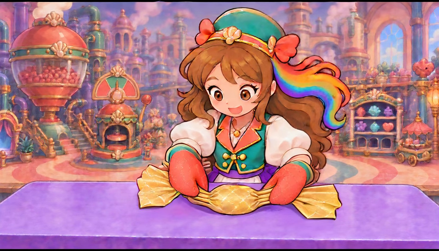
The wrists change together, not as a clear opposing pair; paper fan surfaces flatten and shift.
Complete motion/current game/owner score unassigned for this individual canvas.
Both hands continue pointing down over the necks; the supported oval persists but neither twist is demonstrated.
Complete motion/current game/owner score unassigned for this individual canvas.
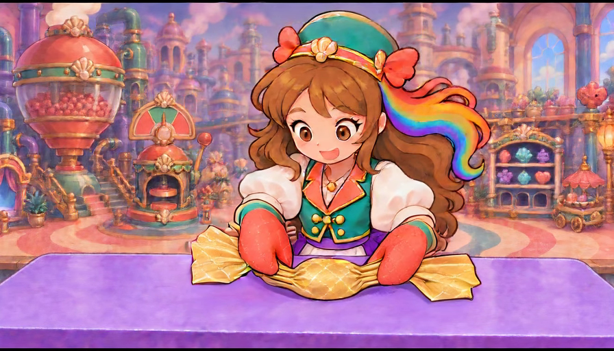
Fans are changing silhouette while both mittens stay near the body; no stable finished neck appears.
Complete motion/current game/owner score unassigned for this individual canvas.
Neck pleats elongate horizontally; fan edges change more than the central covered oval.
Complete motion/current game/owner score unassigned for this individual canvas.
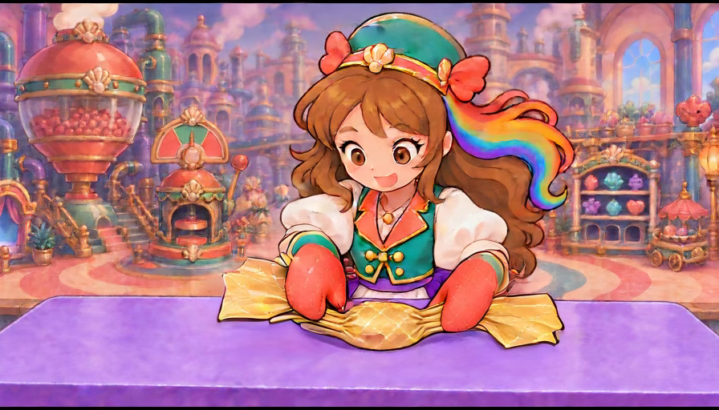
Gold ends begin reading as separate side flaps, with the two mittens still pressing over long open pleats.
Complete motion/current game/owner score unassigned for this individual canvas.
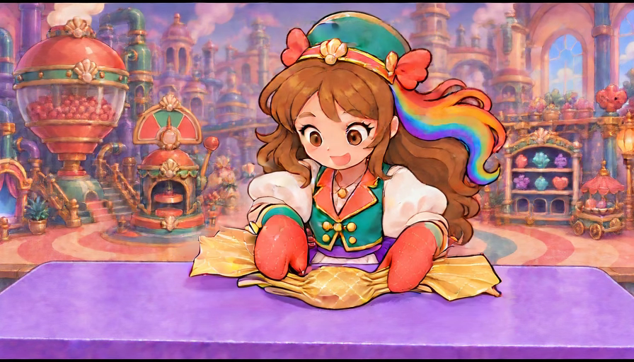
Both gold fans lift beside the arms while multiple long gold strip ends remain attached to the oval.
Complete motion/current game/owner score unassigned for this individual canvas.
Left and right fans rise toward the cuffs, separating from the central neck strips; continuous sheet ownership fails.
Complete motion/current game/owner score unassigned for this individual canvas.
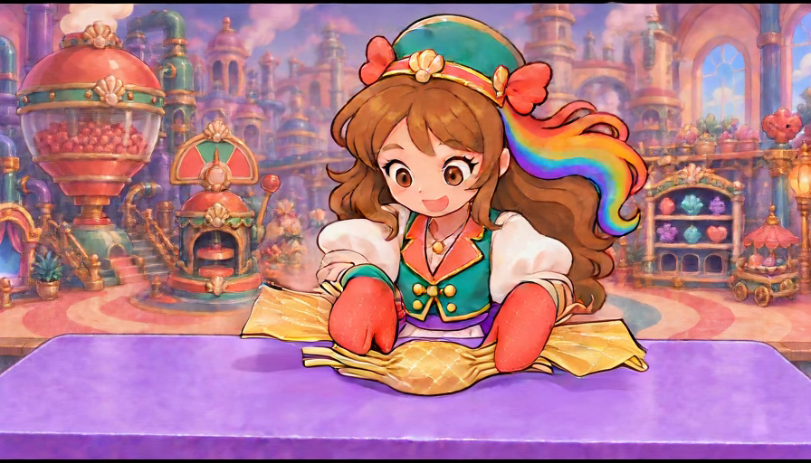
Gold fans are now displaced outside the cuffs while neck strips stay at the oval; no proper closed wrapper.
Complete motion/current game/owner score unassigned for this individual canvas.
Both loose paper fans remain separate from the central strip groups, contradicting a single sheet twisted by the hands.
Complete motion/current game/owner score unassigned for this individual canvas.
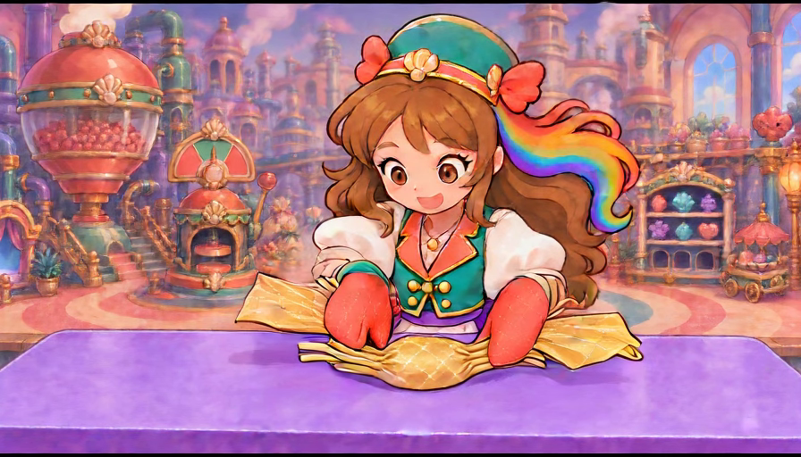
Hands still point toward the covered body; raised outside fans are disconnected from the low neck strips.
Complete motion/current game/owner score unassigned for this individual canvas.
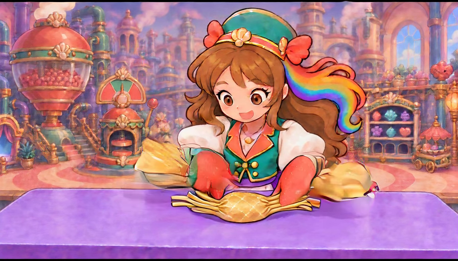
Gold fans and teal cuff areas begin merging with motion smearing; central paper ends remain separate.
Complete motion/current game/owner score unassigned for this individual canvas.
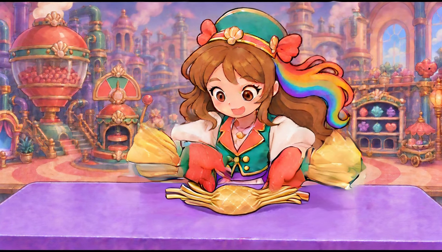
Both gold fan ends grow into raised cuff-like appendages; mitten lobes elongate and the wrapper necks stay on the table.
Complete motion/current game/owner score unassigned for this individual canvas.
Large gold fans visibly attach outside the teal cuffs while separate neck strips end beside the central candy.
Complete motion/current game/owner score unassigned for this individual canvas.
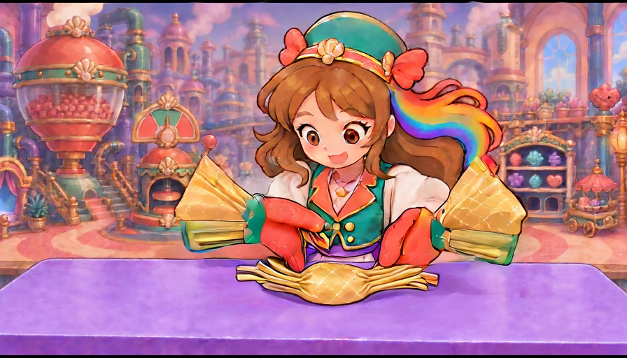
Coral mittens acquire extended finger-like lobes; fan/cuff hybrids remain raised and neither hand rests beside a closed twist.
Complete motion/current game/owner score unassigned for this individual canvas.
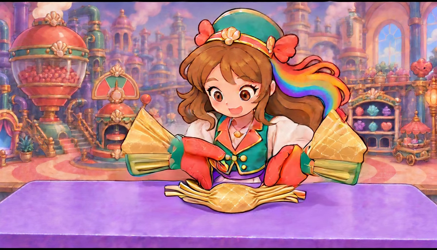
Both large fan/cuff hybrids persist; central candy has bare parallel paper-strip ends instead of finished twisted necks.
Complete motion/current game/owner score unassigned for this individual canvas.
Original two hands are still broadly identifiable, but paper and sleeve topology are materially corrupted.
Complete motion/current game/owner score unassigned for this individual canvas.
Both hands remain above the central neck strips; gold fans stay fused outside their cuffs rather than attached to the wrapper.
Complete motion/current game/owner score unassigned for this individual canvas.
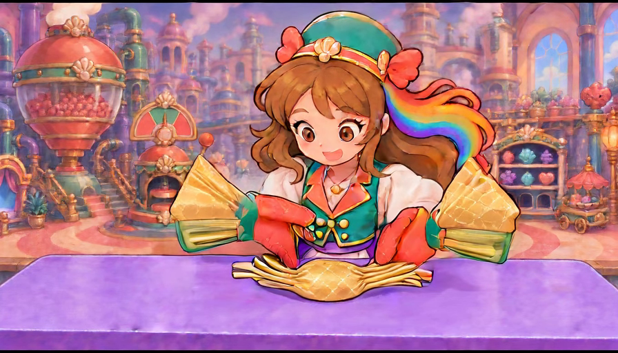
Late pose holds the two cuff-mounted gold fans; no supported stable double-twist completion or released hands.
Complete motion/current game/owner score unassigned for this individual canvas.
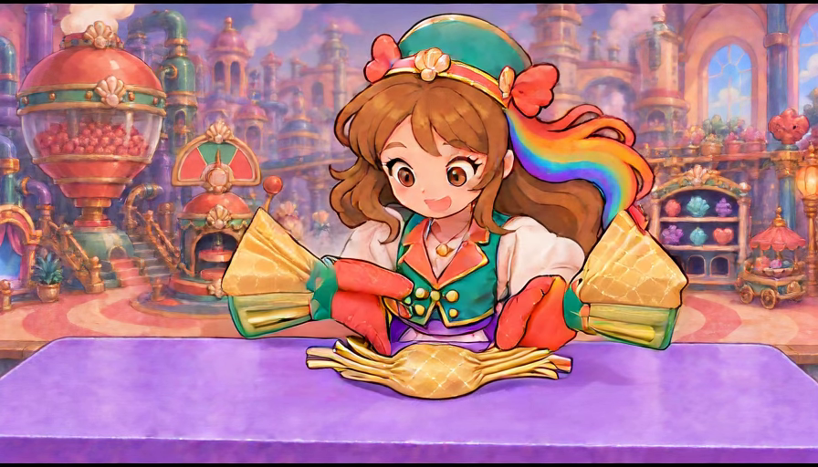
Raised gold fan/cuff forms persist; covered oval remains low but wrapper topology and release are wrong.
Complete motion/current game/owner score unassigned for this individual canvas.
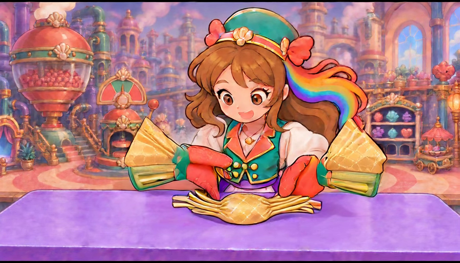
The two coral hands stay near the strip ends; disconnected gold fans are still part of the cuffs.
Complete motion/current game/owner score unassigned for this individual canvas.
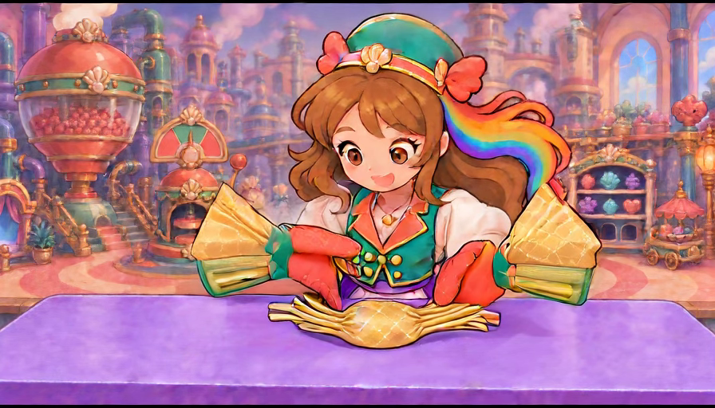
Final near-hold still contains both fan/cuff hybrids and extended mitten lobes, not a proper settle.
Complete motion/current game/owner score unassigned for this individual canvas.
Final endpoint has one covered central body with exposed parallel neck strips and two gold fans fused to cuffs; both release and complete wrapper fail.
Complete motion/current game/owner score unassigned for this individual canvas.
Next study needs the missing exact supported twist/release poses before further motion attempts. Preserve all failures;never repair generated frames by moving or warping subjects. Whole wrapping and ordinary game/training/device/child/owner/comprehensive report remain open.